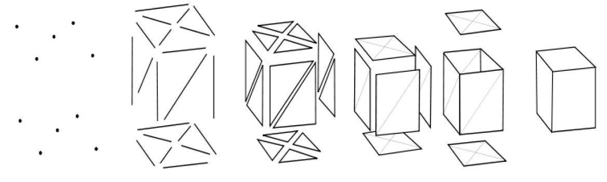
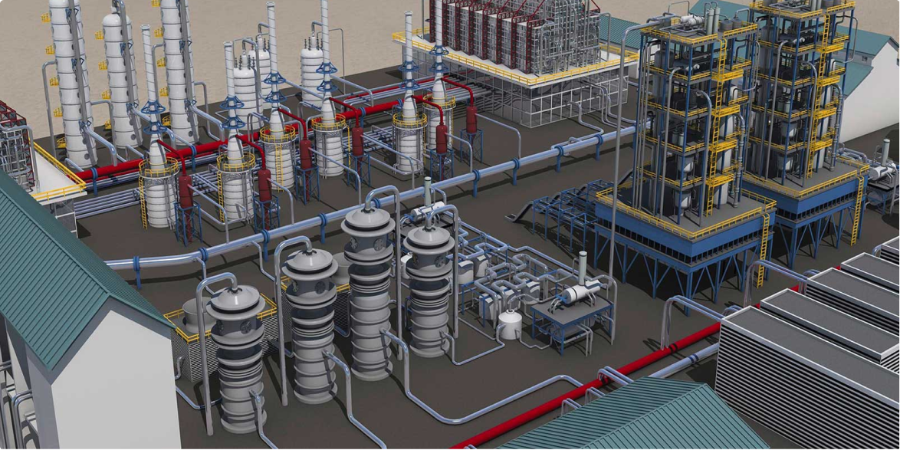

Виды 3D-моделирования
Полигональное моделирование
Полигональное моделирование дает возможность производить различные манипуляции с сеткой 3d объекта на уровне подобъектов: вершин , ребер, граней. Сам полигон состоит из граней, но в системах, которые поддерживают многосторонние грани, полигоны и грани будут равнозначны.
Это самый первый и основной вид моделирования, так как при помощи его можно создать объект любой сложности путем соединения групп полигонов.
Вершины
Ребра
Грани
Полигоны
Поверхности
Объект
Полигональное моделирование подразделяется на три типа: низкополигональное, среднеполигональное и высокополигональное.
- Низкополигональное моделирование (Low-Poly) предназначено для создания объектов с небольшим числом полигонов, обычно, для экономии ресурсов, когда не требуется высокая детализация, а так же для создания низкополигональных иллюстраций, которые набирают большую популярность в последнее время;
- Среднеполигональное моделирование (Mid-Poly) ориентировано, обычно, только на необходимый результат при рендеринге, то есть при моделировании нужной геометрии, например, с применением булевых операций; над полигональной сеткой никакие работы по её оптимизации не производят, или они минимальны;
- Высокополигональное моделирование (High-Poly) представляет собой создание объекта с большим числом полигонов, обычно, точной его копии.
Стандартная схема High-Poly моделирования происходит с постепенным наращиванием уровня детализации 3d объекта:
- Моделирование
- Визуализация
- Вывод модели (печать либо на монитор)
Сплайновое моделирование
Стандартная схема High-Poly моделирования происходит с постепенным наращиванием уровня детализации 3d объекта:
Сплайновое моделирование представляет соб
Преимущество данного метода в гибкости изменения формы сплайна.
Данный вид моделирования часто сравнивают с полигональным, как векторную графику с растровой. Преимущество векторной графики в том, что при увеличении объекта, его качество не изменяется, в отличие от растрового, где становятся видны пиксели. Так же и при увеличении объекта, созданного сплайнами, его качество останется неизменным, а при полигональном моделировании будут уже видны полигоны.
NURBS моделирование
NURBS расшифровывается как «Non-Uniform Rational B-Spline», и представляет собой технологию создания 3d объектов при помощи специальных кривых, которые называются B-сплайнами. Некоторые специалисты выделяют данный вид моделирования в отдельный, а некоторые – в подвид сплайнового моделирования.
Принцип моделирования состоит в следующем: при помощи B-сплайнов, расположенных по вертикали и горизонтали, строится нужная форма объекта, а затем все это соединяется при помощи полигонов.
Существуют две разновидности этого моделирования:
- при помощи P-кривых (Point), форму которых можно изменять при помощи вершин, которые расположены непосредственно на самой линии;
- при помощи CV-кривых (Control Vertex), форму которых можно изменять при помощи вершин, которые расположены за пределами линии.
В качестве же примеров программ, которые используют моделирование кривыми как основной метод, можно привести «Rhinoceros», «Autodesk Alias», «MOI 3D», «SolidThinking».
3D-скульптинг
3d-скульптинг он же «цифровая скульптура» представляет собой имитацию процесса «лепки» 3d модели, то есть деформирование её полигональной сетки специальными инструментами – кистями. Можно провести аналогию с лепкой фигур руками из пластилина или глины. Только в программах 3d моделирования пальцы заменены на инструмент «кисть», а «пластилином» является полигональная сетка.
Программами-представителями данного вида моделирования являются «ZBrush», «Sculptris», «Autodesk Mudbox» и др.
Промышленное моделирование
Системы Автоматизированного Проектирования (САПР) и или по-английски CAD (Computer-Aided Design) применяют для создания 3d моделей в первую очередь промышленного назначения. Они предназначены для создания точных копий реальных объектов.
При данном виде моделирования учитываются не только малейшие зазоры, но и свойства материала моделируемого объекта. В связи, с чем данный вид моделирования нашел широкое применение в инженерном деле. Особенность этого моделирования в том, что для создания модели не используют полигоны, а цельные формы.
Вывод
Таким образом, можно сделать следующий вывод. При создании моделей не сложной формы лучше использовать полигональное моделирование. Для получения гладкой формы несложных объектов – сплайновое или NURBS моделирование, либо полигональное с использованием инструментов сглаживания.
При создании сложных биологических организмов удобнее использовать 3d-скульптинг. Когда же необходимо создать точную модель с необходимыми зазорами и учетом физических свойств материала, то здесь наиболее подходят методы промышленного моделирования.
При создании сложных моделей вышеописанные методы моделирования часто используются совместно, так как это ускоряет процесс моделирования. Так, например, при создании персонажа для игр используется 3d-скульптинг, с помощью которого прорисовываются необходимые мелкие детали, а затем на её основе создается Low-Poly модель полигональным моделированием.